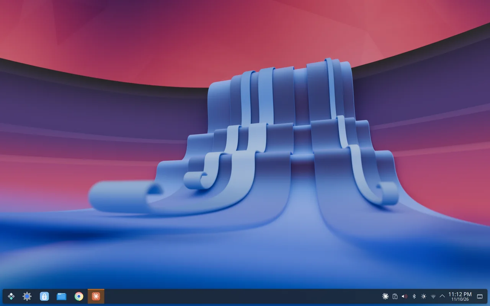
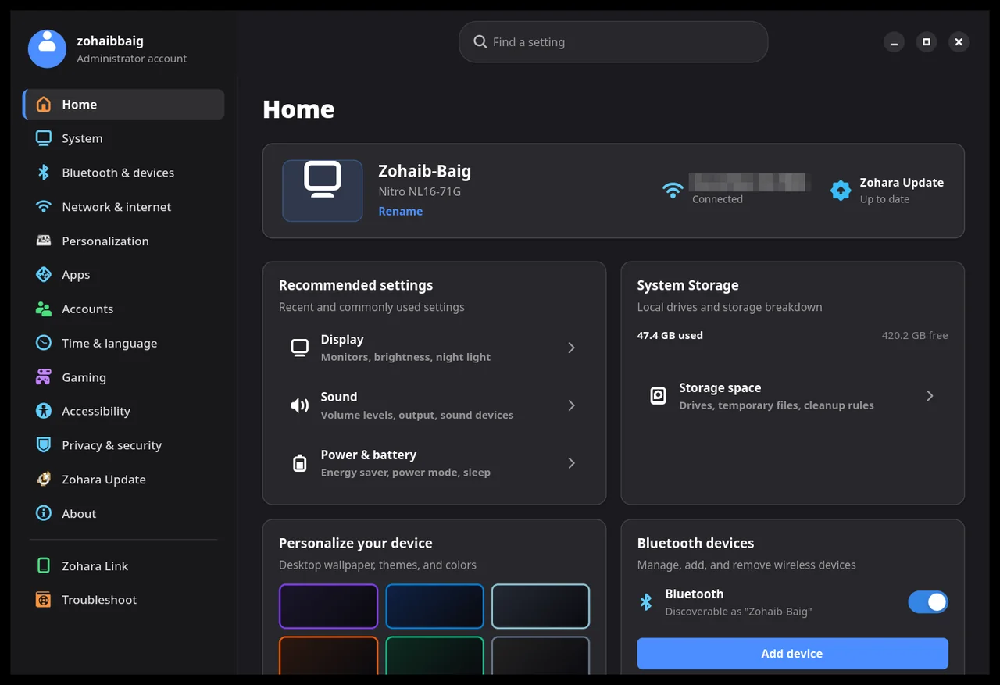

A Linux that feels like home.
Zohara OS gives you a desktop you already know how to use: a familiar taskbar and Start menu, a Settings app laid out like Windows 11, a software store, and voice typing that runs entirely on your own computer.


A desktop you already know.
Linux is powerful, but it usually asks you to learn a new way of doing everything. Zohara keeps the parts you know and puts a button on the parts that used to need a terminal.
Taskbar and Start menu
A Start button, a Start menu with search and Favorites, and a Windows-flavoured look on top of KDE Plasma. Nothing to relearn on day one.
Voice typing, fully offline
Press Meta + H, speak, and the words are typed where your cursor is. Recognition runs on your computer with whisper.cpp; nothing is uploaded.
A 3D desktop cube
Your desktops turn as a cube with 3 and 4 finger swipes. Press Meta + C to see every desktop at once and drag windows between them.
Live wallpaper
Pick a video and it loops behind your windows. It is quiet unless you turn the sound on.
Sound your way
Left and right balance for each speaker or headset, volume up to 150%, and an equalizer that changes while the music plays.
Graphics choice per app
On a laptop with two graphics chips, choose which one each app uses: the power for the apps that need it, the battery for the rest.
Settings that change real things.
A custom Settings app in the Windows 11 layout: display, sound, Bluetooth, network, storage, accounts, default apps, gaming, printers and more. Each page controls the actual system, not a mock-up.
- Updates you control. Pick a channel, choose what to update, undo the last update.
- USB drives and SD cards. Rename, format, check and repair, close safely, or write a bootable USB from an ISO.
- Privacy. A firewall and device access in one place, one indicator for camera and microphone use.
- Memory and performance in plain words, with the defaults a click away.
- Troubleshoot. Problems found and fixed, with a report you can send.


One place for your apps.
Zohara Store installs apps and handles updates. It shows what is changing, lets you choose what to update, and offers a way back if an update goes wrong.
- Many sources, one list. The system repositories, a large set of prebuilt community apps, and Flathub.
- Snapshots around updates. On Btrfs a snapshot is taken before and after every package change.
- Updates follow a date the project approves, not the raw Arch stream.

Windows games, no Steam in the way. In testing
Games from Steam, Lutris and Heroic show up on their own. In the newest builds, a Windows game or installer opens with a double-click and runs through Proton-GE or Wine, with its own settings for the graphics chip, Game Mode and the performance overlay.
Double-click and play
.exe, .bat, .msi and shortcuts open with Proton-GE or Wine. Proton-GE is downloaded when you ask for it and checked against its published checksum.
Safety mode
A program you have not added as a game runs in a protected space that sees an empty home folder, not your files, passwords or browser.
A gear on every game
Graphics chip, Game Mode, MangoHud, DirectX through Vulkan, game options and variables, for Steam, Lutris, Heroic and your own games.
Your phone and your computer, together. In development
A companion for Android: share the clipboard, send files, see phone notifications on the desktop, and use the phone as a touchpad, keyboard and game controller. Pairing is a PIN you type once; nothing leaves your network unless you set up Tailscale.
Clipboard, files, notifications
Copy on one, paste on the other. Send a file either way. Phone notifications appear on the desktop.
A touchpad that feels like one
Pointer acceleration, two-finger scroll, tap to click, tap-and-drag. Events go straight to a virtual input device.
A game controller
The phone shows up on the computer as a wired Xbox 360 controller, with sticks, triggers, a direction pad and buttons.
Problems get reported, not hidden.
Zohara is careful where careful matters: before an update, before a disk is touched, and when something goes wrong.
Snapshots around updates
On Btrfs, a snapshot is taken before and after every package change, so there is something to go back to.
Hard to wipe by accident
The disks inside the computer and the one Zohara runs from are locked. Every erase names the drive, lists what is on it and needs you to type ERASE.
Reports, not mysteries
If the installer fails, one button on the Welcome screen saves a report to a USB stick. Installed, Settings keeps a log and offers one-click fixes.
A safer lock screen
It no longer locks you out after a wrong password.
Updates you can say no to
Programs that fit your hardware are suggested, and you can decline any of them.
Notify, never surprise
Update checks tell you; they do not install on their own.
Built on solid parts.
Arch Linux base
With the KDE Plasma 6 desktop on Wayland.
The Zen kernel
Tuned for desktop and gaming rather than servers.
NVIDIA open drivers included
Supported NVIDIA GPUs need no manual driver setup.
Brave Origin as the browser
Brave’s ad and tracker blocking without the wallet, VPN or news.
The Calamares installer
It can install alongside Windows when it finds it, and never picks “Erase disk” for you.
Honest status
Zohara OS is still being finished. Some Settings pages do not respond yet, and the ISO is built from the latest development work. Please try it in a virtual machine or on a spare computer first.
Try it today.
The ISO is about 4.0 GB. It is hosted on Oracle Cloud object storage, because it is too large for a GitHub release file.
Zohara OS 1.1 build 2026.10.10
SHA-256 (also in SHA256SUMS next to the download):
- Write the ISO to a USB stick with Ventoy, balenaEtcher or
dd. - Boot from the stick and choose Install Zohara, or Try Zohara to look around first.
Before you boot. Turn off Secure Boot (the bootloaders are not signed yet). If the installer shows no disks, set storage mode to AHCI instead of RAID / Intel RST. On a PC with Windows, choose Install alongside or Manual partitioning.
| Processor | 64-bit x86 (Intel or AMD). Older CPUs work; voice typing is slower on them. |
|---|---|
| Memory | 4 GB RAM |
| Storage | 20 GB free |
| Firmware | UEFI or legacy BIOS |
| Graphics | Intel, AMD, or a modern NVIDIA card |
Tagged versions and release notes are on the GitHub Releases page. The newest development build is on GitHub Actions (sign-in required).